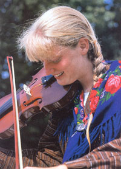
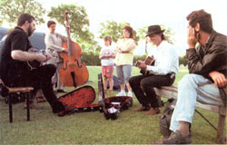
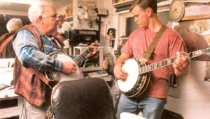
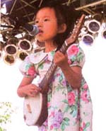
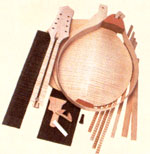
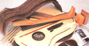
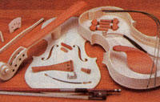

Call it a jam, sing-around, song swap or hoot-or just a hunch of friends noodling in the kitchen-home made music offers an unparalleled oppor tunity to get to know people, expand your musical horizons and have a great time without spending one thin dime. Over time, a musical gathering can become a seed swap, garage sale, potluck smorgas bord, babysitting co-op, barter fair, sup port system and job board-all the things community is, with a beat.
"I've most enjoyed times where music has been a naturally flowing part of a conversation," says Jerry Rasmussen of Darby, Connecticut. "I ran a folk concert series for 27 years and spent many late nights sitting at the kitchen table after the concert having something to eat and catching up with the lives of friends I'd come to know through music. It just seemed natural to reach over, grab a guitar and punctuate a conversation with a song.
"Music is first and most importantly a beautiful way to communicate. You express yourself not only with the notes you play, but with how you respect each other-kind of like life."
Every gathering of musical do-it-yourselfers, regardless of how simple or small, presents the possibility of adventure, camaraderie and celebration-even, occasionally, splendor.
Music has been a part of human society from the get-go. For most of that history, music was a participatory experience, not a performance event. Only recently has the paradigm shifted from active to passive. Getting your hands on music playing, singing, sharing music with others-provides long-lasting, sensual pleasures far beyond the flip of a CD player's switch.
It also connects us in a particularly rich way to the past. The Music America makes-jazz, blues, bluegrass, rock 'n' roll, roots-is fed by streams whose headwaters are found all over the world.
If you want to become a creator, rather than a consumer, of music, now's the time. You don't even have to he much of a musician: Everybody has to start Some where. All you have to do is jump in and learn by doing.
If you're new to an area, or haven't explored its musical possibilities yet, ask at area music stores where to find local acoustic jams or song circles. You might draw some blank stares if the store is oriented strictly toward electrified music. But if you keep asking, you'll find a jam to join. Even in relatively small communities, you'll find people who regularly gather to make music. There often is much crosspollination among groups, so if you go to a bluegrass jam, you'll meet people who also do Celtic music or blues-or can tell you who does.
Coffeehouses, pubs and community centers are good places to check for music gatherings. You might not be quite ready to perform at the local pub's open mic session, but you'll meet other musicians there and can hook up. I've found jams by meeting other singers at church, introducing myself to people at festivals, visiting open mic sessions and, when desperation drove me to it, by putting a classified ad in the newspaper. More recently, I've connected with other folk and traditional musicians online.
"When I moved here, I was starting a new life, starting everything over," says Carol Cunningham of Shepherdstown, West Virginia. "I moved cold turkey to a brand new town, had no friends, no community. I just went to stores in town and asked where the music was. They told me to go check out Jay Hurley's store.
"I not only found wonderful music to listen to for free every Thursday night, I found people to play with. All sorts of relationships have come out of that. I met so many generous people, amazing musicians. It's been one of the most satisfying experiences of my life."
If you can't find an existing music circle, create your own. There are as many ways to do this as there are types of music. Call everyone you know who plays an instrument, sings-or who aspires to play or sing. Post notices on bulletin boards, at music stores or other community watering holes, at your workplace or wherever you routinely spend time; let people know you're looking for some folks to play with. Take music classes at the local community college and get to know the people in your classes. Don't be shy: Set a time, date and place for your jam, get the word out and keep the ball rolling.
"I came to Juneau about 15 years ago, knowing no one for a thousand miles around," says Alaskan Elva Bontrager. "I took a fiddle class that first winter and soon knew 50 people or so. Of those 50, at least 15 have become beloved friends, both in music and in the world outside. Nowadays, I rarely attend a party that doesn't involve homegrown music. The combination of music, laughter and food is a lovely one."
Once you do begin jamming with people in your community, you'll find unexpected rewards that go far beyond the music. Mick Lane of Gun Lake, in western Michigan, worried that he'd come to a cultural wasteland when he first moved to his community.
"I was completely knocked out by the people I met and the music they were doing," Lane says. "At my first jam, people started bringing out all kinds of old instruments-Uillean pipes, bazoukis-and playing simply amazing songs. Turns out there was a longstanding community of folkies of every background imaginable.
"Through their music, I started to find out about our history-the lumber camps. the whaling ships, the Revolutionary War. You hear the songs, learn some history. then find out that was only an entry point. Each song makes you want to dig further-a sang is a yarn. our person's perspective and with each song you keep seeing more mid more sides of the story."
If you're new to jamming some rules of the road can help the music-making go smoothly (see "Etiquette and Hot Tip's", left). Musicians generally are a related group and don't sweat the small stuff. Give them a place to sit, somewhere to p ark their instrument cases, no shushes if they get carried away and something to met their whistles-it's not a lot more complicated than that. In many music cir cles, everyone has his or her own "festival" chair and is happy to bring it along so if you don't have extra chairs, make it a BYOC event. (Hint: Chairs without arms are much kinder fits the instrumentalists.)
One benefit of weekend jams is that parents who do music on the weekends may never need a babysitter again. But not every jam welcomes kids, so be sure to find out if yours is child-friendly (or creation one that is). Then bring the kids along, pay close enough attention to them that they don't hassle other people or endangers themselves. then relax and have a good time. As the young-uns are old enough to hold a fiddle, put an instrument in their hands and watch them become a part of the community I've been to jams that lasted until dawn, where babies, mid-sized children and the occasional worn-out adult snoozed on pallets on the floor, slept draped across arms of chairs or otherwise crashed wherever the music left them.
Lynn Cunninghnm of Reston, Virginia, says this inclusion of children is one of the qualities that keeps her and her 10-year daughter connected to the group.
Music has taught me so many lessons," Lynn says. "I've learned patience, how to smile in the face of adversity I've learned that manners are first and talent is second. I've learned that no on(! is indispensable, but that some people arc irreplaceable, and that appreciation is a precious gift.
"I've also learned that children who grow up in this kind of community of creative people are less apt to get into a variety of destructive behaviors, There's a world of disenfranchised kids out there who had so much potential but were never given a way to vent their creativity, who never felt included."
Community music gatherings may be one of the only places in the country where age, social and economic status or professional accomplishment don't matter. You may jam with musicians for years and never know or care what they do for a living. Age is especially irrelevant. The practice of passing along knowledge from older to younger generations is strong in traditional genres, and the ranks are littered with musicians who've been playing since they were knee-high to a banjo.
Another plus in traditional circles is that musicians proficient on one instrument will pick up a different one to learn, becoming beginners again. So there's no need to feel self-conscious if your musicianship is low-level. (Easier said than done: My guitar playing never seems to rise above rank-beginner status.)
Struggling to learn new techniques, to master a B chord, to memorize new lyrics, or just to keep the rhythm steady from start to finish provide ongoing opportunities for mastery. That ability to conquer challenges, says Jeri Corlew of Northwood, New Hampshire, carries over into other areas of life as well.
"I've found something I can be good at. And just knowing you can be good at anything carries over. The folk community has been one that has been welcoming to a very diverse bunch of people. Sure, there are egomaniacs and social misfits, just like anywhere else, but there are also a whole lot of gentle souls who just like people. Because of the support I've received, I've found a strength in myself I might never have discovered. This culture of support gets passed along like the music: You learn, you do, you teach."
Even if you aren't a performer, there's a place for you in most jams. Karen Tannen, whose husband, Gary Tannen, is a mainstay of several Kansas City jams, says she is most comfortable in the role of listener. "I enjoy going to the jams and always feel included. Musicians need an audience, you know," she says with a laugh. "We've recently added a few trinkets to our percussion bag and it's fun to join in sometimes with rhythm instruments." Recently Karen has grown bold enough to sing some duets with Gary and plans to team more songs.
When you find or create a musical community, you'll discover the glue that keeps so many of us coming back week after week. We arrive at a jam with the usual challenges-car trouble, kid trouble, parent trouble, job trouble-then someone sings "Trouble in Mind," or "Pack Up Your Sorrows," our mood lifts and our bodies start feeling better. Life goes better with music-the more homemade and deeply shared, the better.
If music interests you, your tribe is out there. All you need to do is find it-then play your heart out.
MOTHER'S former managing editor, K.C. Compton teaches singing at the Americana Music Academy in Lawrence, Kansas, and is a longtime member of the Mudcat online community.
Check Internet search engines for specific songs by typing in the song title, +lyrics or +chords. Here are a few Web sites to get you started:
Acoustic Guitar Central
Excellent site with great resources for players at all levels. Discussion forums, online lessons, books and interviews with established musicians. Publishes quarterly magazine. www.acousticguitar.com
Mudcat Cafe
Home of the Digital Tradition, featuring lyrics for more than 8,000 traditional songs, with more added all the time. One of the oldest and largest online music communities, with members all around the globe. (Note: If a thread is labeled "BS," it could be about anything and is not necessarily G-rated.) www.mudcat.org
Folk Legacy Records Wonderful array of recordings and books in the folk genre. www.folklegacy.com ; (800) 836-0901
The North Carolina Mountain Acoustic Music Association provides an excellent Web site with descriptions of various traditional genres, from Appalachian to blues to old-time country. www.ncmama.org
Sing Out! Granddaddy of all folkrelated organizations, publishes quarterly magazine, lots of online resources, music and folklore books, including "Rise Up Singing," a bible among some folkies. www.singout.org ; (610) 865-5366
Homespun Tapes offers video, CD and DVD instruction on a variety of instruments in many Americana genres. www.homespuntapes.com; (800) 33-TAPES
As one who has made every dumb mistake in the book, I've come to some conclusions about what works and what doesn't. (Example: I took a tambourine to my first bluegrass jam and played it enthusiastically for hours. This didn't work.) Here are some observations:
All jams are not equal. Some are strictly instrumental, some mostly singing, straight-ahead bluegrass or wildly eclectic. Some jams don't welcome beginners, some do. Find or start a jam that's right for you.
Learn the rules and standards of your jam. Some have rigorous rules, others are free-form. Observe before you barge in. When in doubt, ask questions. Listen. Appreciate. This doesn't mean every jam has to take place in hushed silence, but courtesy and respect do matter
Jams are supposed to be fun. Don't worry about the competition, except to the degree that doing so keeps you on your toes mastering new material.
If you play a novelty instrument, remember it's called "novelty" because it's unusual. If you play your saw or bodhran or glockenspiel all the time, it isn't novel or, probably, even very musical.
Collect songs in a notebook or binder. Credit the songwriter or source when you can. Write down chords, words, fingerings, time signatures-anything that will help other musicians figure out what you're doing. Know your songs' keys. When you can, memorize your music: Memorizing songs is better than gingko to keep your mind agile.
If someone is using a chord you don't recognize, or does a cool fingering you'd like to learn, ask them to show you what they're doing. Musicians are usually exceedingly generous.
Don't pick up someone else's instrument and start noodling around on it without permission. This is clueless and disrespectful.
If you enjoy handcrafts, you may want to build your own instrument. Several companies make kits and offer good technical support. You don't need to be a master carpenter, but some basic skills and basic tools are necessary. If you don't already have the skills, you might want to ask someone who does to help you build your first instrument.
"The neat thing we see is whole families getting together to build an instrument," says Jerry Brown of Musicmaker's Kits in Stillwater, Minnesota. "It doesn't require so much skill as it does time, motivation and interest. So it really can be a great way for the family to work together. Then, they have something really nice that can stay in the family."
Companies often rank their kits in order of skill level and the number of hours required for the project. A simple hammered dulcimer takes about 10 to 20 hours, a mandolin-one of the more complex projects-can take in excess of 40 hours.
Reputable kit manufacturers have hotlines available for free technical support and also offer replacement parts, often for free, in case you really mess something up.
Kits can range from $85 for a teardrop dulcimer to more than $2,000 for top-of-the-line instruments. Although a handbuilt instrument can cost about half the price of a finished instrument, most kit builders do their projects for the satisfaction of creating something by hand, says Jay Hostetter of Stewart-MacDonald Guitar Shop Supply in Athens, Ohio.
For good discussions of which kits to buy and which to avoid, spend some time on one of the online music forums (see Resources, Page 37). In the box at right are a few of the kit-makers that have been recommended:
Stewart-MacDonald
PO. Box 900
Athens, OH 45701
(800) 8482273
www.stewmac.com
Musicmaker's Kits Inc.
PO. Box 2117
Stillwater, MN 550823117
(651) 439-9120
(651) 439-9120 (to request catalog)
(800) 432-5487 (to place order)
www.musikit.com
Cripple Creek Dulcimer Kits
740 Manitou Ave.
Manitou Springs, CO 80829
(719) 685-9655
www.dulcimer.net
Janet Davis Music Company
PO. Box 5337
Bella Vista, AR 72714
(800) 933-5362
www.janetdavismusic.com
Rhythm Revolution
Links to many websites for
drumming circles and drum makers. www.drummingcircle.com/links.html
Drum Brothers
Handmade drums, or kits for
do-it-yourself.
www.drumbrothers.com
Cowpie Bunkhouse: Lots of country,
plenty of Western.
www.roughstock.com/cowpie/
Lyrics World for Pop/Top 40
songs by decade:
www.ntl.mairlx.com.br/pfilho/summer.html
Lester S. Levy Collection
of Sheet Music:
Images of covers and sheet music.
www.levysheetmusic.mse. jhu.edu/index.html
One of the most extensive lyric
repositories and link libraries
you'll find: www.geocities.com/Area51/Zone/6338/lyric.htm
|
 By David Cavagnaro JUDI LUBEEK |
 LYNTHA SCOTT: AMERICAN FOLKLIFE CENTER, LIBRARY OF CONGRESS |
 Jerilynn Anderton |
|
 |
 |
 |
|
 |
|
|